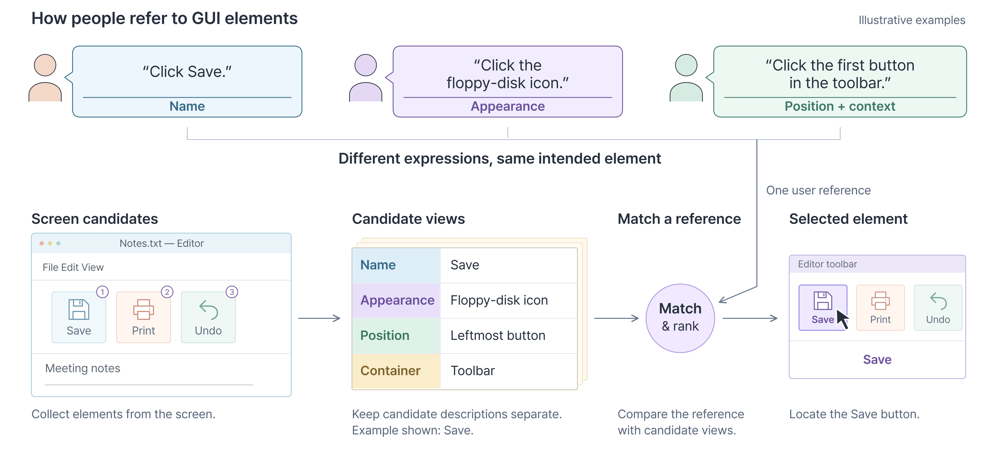
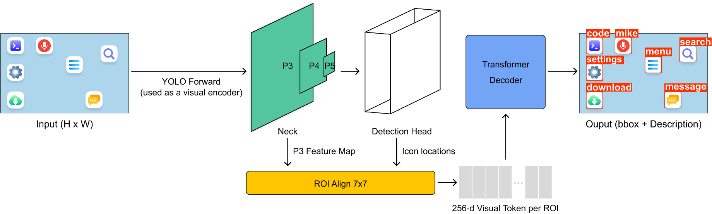
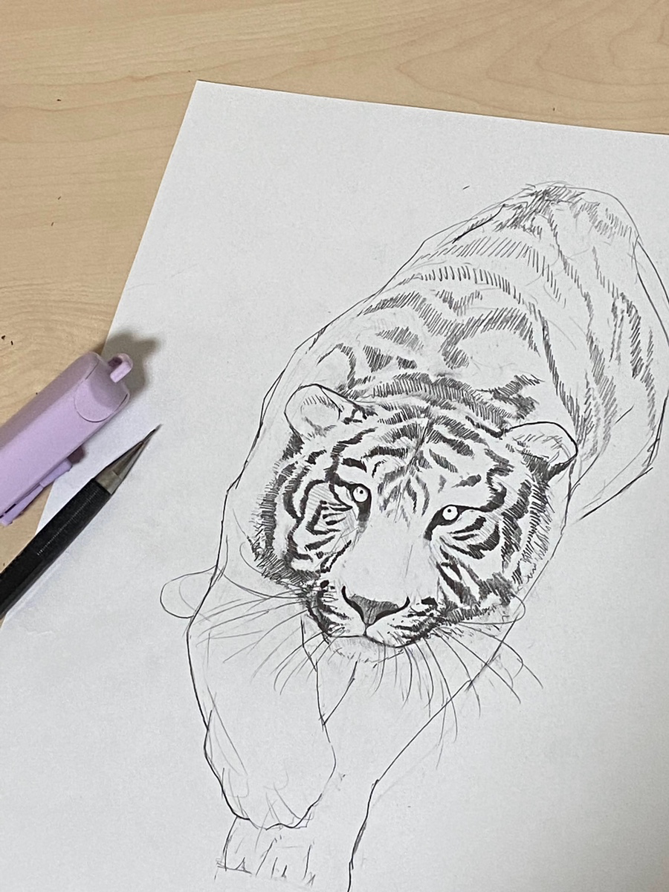
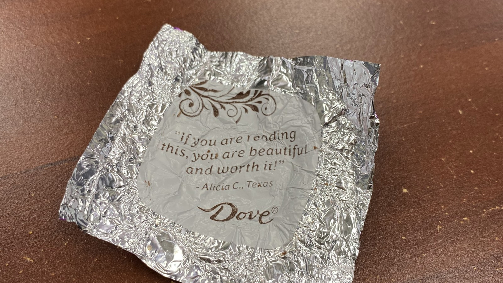
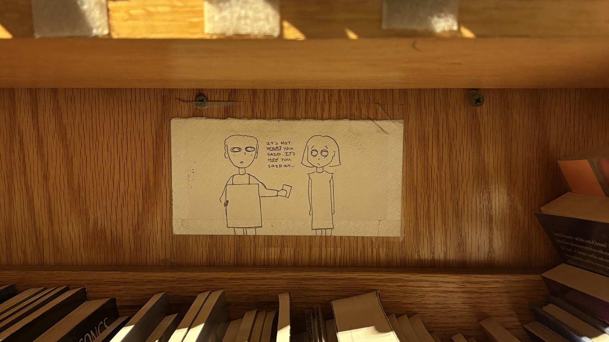

Apr 2026 – Present
Researcher, Korea Electronics Technology Institute (KETI)
Seongnam, South Korea
Develop agentic AI systems for workflow automation, with an emphasis on workflow visualization, agent orchestration, and tool use.
Hello! Thank you for visiting my website.
My name is Sumin, and I am currently a researcher at Korea Electronics Technology Institute (KETI), where I develop agent systems for workflow automation, agent orchestration, and tool use. I also conduct research with AMS Lab at Sookmyung Women’s University on UI detection and GUI grounding.
My research focuses on efficient GUI grounding: identifying the intended on-screen target from ambiguous user instructions. I investigate structured candidate representations, lightweight embedding models, and query-conditioned information selection, including when accessibility metadata is limited or unavailable.
My broader research interest is in building reliable and efficient intelligent systems that can perceive, ground, and act in interactive environments.
Ongoing research

Under review

Published · Conference abstract
KSME IT and Intelligent Convergence Division Spring Conference · April 2026
Oral presentation
Award
Visual Workflow Orchestration
From Conversations to Daily Work Records
Conversational Task and Reminder Assistant
Apr 2026 – Present
Seongnam, South Korea
Develop agentic AI systems for workflow automation, with an emphasis on workflow visualization, agent orchestration, and tool use.
Aug 2025 – Mar 2026
Seoul, South Korea
Conduct research on UI detection and GUI grounding for computer-use agents, including candidate representations and reference ambiguity.
Jun 2023 – Jun 2024
Richardson, TX, USA
Developed web-based systems for safety inspections, employee KPI management, and inventory and asset management.
Mar 2022 – Feb 2026
Seoul, South Korea
GPA: 4.1 / 4.5
Fall 2024
Reading, PA, USA
GPA: 4.0 / 4.0
Oct 2022
Shinhan Financial Group
Proposed a travel service that uses card transaction data to recommend personalized travel routes and support shared expense management for groups.
Mar 2022 – Feb 2023
IT Engineering Student Society, Sookmyung Women’s University
Led website operations and technical content publication, and was recognized as an outstanding executive.
Aug 2023 – Jan 2024
Collaborated in packing nutritious meals for children facing food insecurity worldwide.
Dec 2023 – Apr 2024
Packed bags of nutritious food and distributed them to people experiencing homelessness in the North Dallas area.
I enjoy drawing! It helps me relax and clear my mind.

I like little messages I come across in everyday life.


I love kongdduck (콩떡), my sister's puppy. He is adorable.